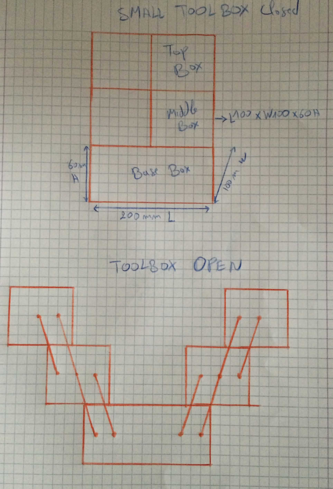
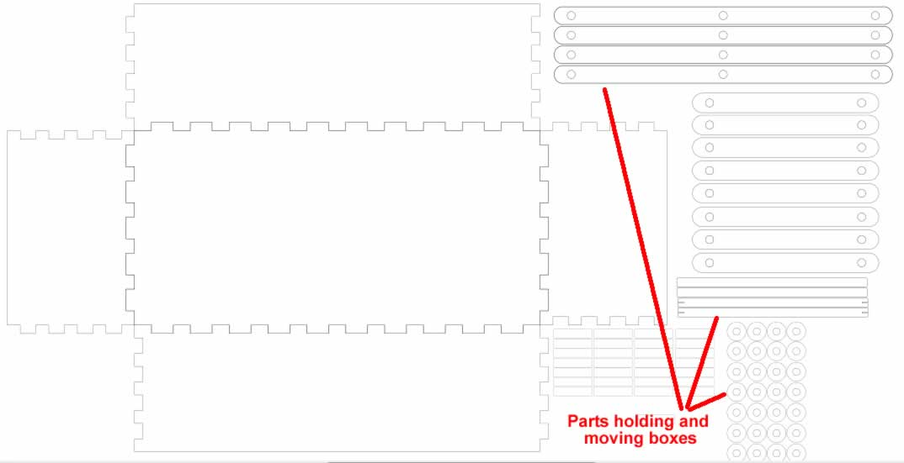
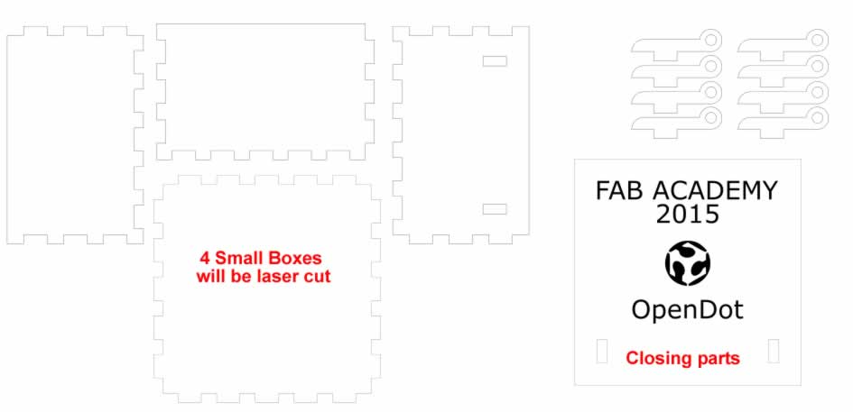
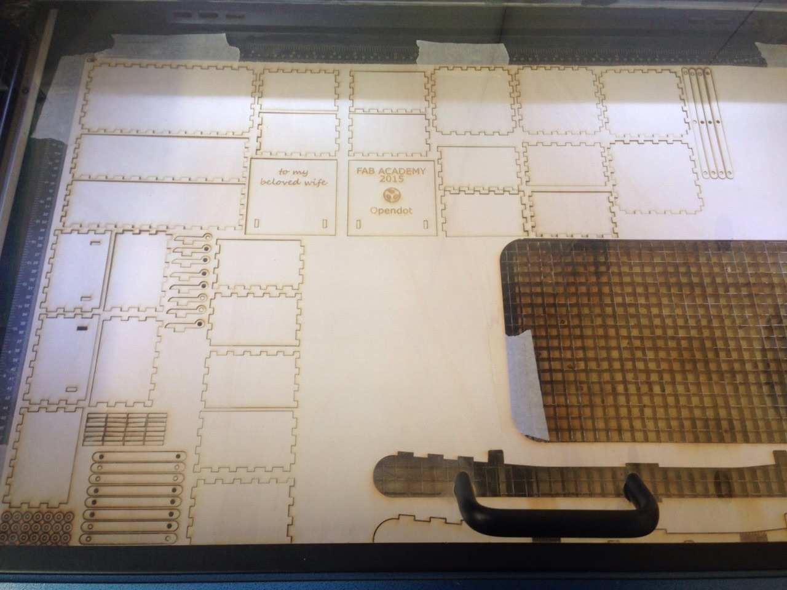

The assignment for this week was to build a model composed of parts that could be cut in a laser-cut machine or vinyl cutter. As usual, the requirements are to document all the process of the design, preparation and cutting of the whole model.
In my case, I started with looking in internet for inspiration but also to find something that is not difficult but at the same time makes me learn all the aspects of computer-controlled cutting. After several research and ideas, I decided to design and build a small tool box for homemade tooling for my wife. Here at this moment, I designed by hand then on the computer the toolbox, I developed it on Inkskape taking in consideration all the aspects of the laser cutter available in Opendot Fablab (Kerf, power, etc). This week because of some urgent deadlines for my company, I couldn’t got to the Fablab and laser cut my model, but I’m planning to do it this coming week.
Step 1: Here is the initial hand sketch of the idea I had in mind that I produced:

Step 2: After that, before going to the computer and start designing, I did some calculation work in order to have all the dimensions of the building blocks of my tool box (all the dimensions are in millimeters):
Material width 4 mm
Kerf: 0,18
Base Box external dimensions: 200 X 100 X 60
- Base: 200,36 * 100,36
- Long lateral: 200,36 * 60,36
- Short lateral: 100,36 * 60,36
Box middle external measures: 100 X 100 X 60
- Base: 100,36 * 100,36
- Lateral side: 100,36 * 60,36
Box Top external measures: 100 X 100 X 60
- Base: 100,36 * 100,36
- Lateral side: 100,36 * 60,36
- Top side: 100,36 * 100,36 (No NOTCHES)
Holes positions
- Vertical position: Middle from top and down borders
- Horizontal position: 15 mm from side border and equal distance between horizontal holes
Step 3: I tried to translate and design my toolbox idea on the computer using Inkscape. This work took me a lot as it is the first time for me to design parts to be laser cut. I learnt a lot dealing with and taking in considerations everytime the Kerf and the size of notches. But I think it is a learning by doing and for sure I will make other mistakes in order to learn it very well. Here are what I designed:


Step 4: Toolbox lasercutting process:

The Inkscape file is available for downloand here:
{kind=link}